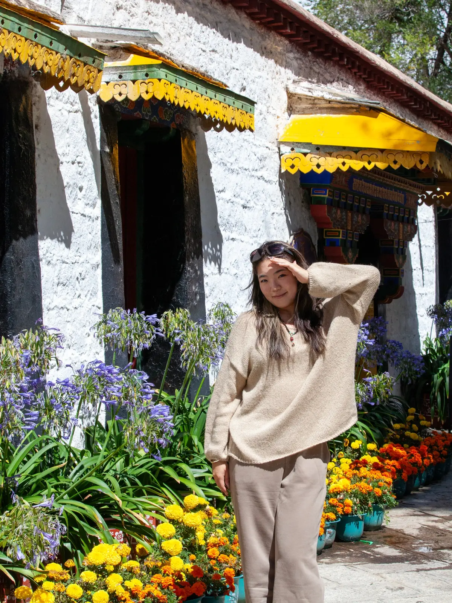

About me
I photograph the character of a place through its people, colors, and everyday details.
I'm Aria Guo, a photographer based in Seattle. My work is grounded in curiosity and observation, with a focus on travel, documentary, and portrait photography.
I’m especially drawn to moments that feel unposed: small gestures, lived-in spaces, and the visual rhythms that reveal how a place feels.
Based in
Seattle, Washington
I shoot with
Hasselblad X1D II
Canon 5D Mark II
Canon IXUS 130
Instagram@muyaoog ↗